6. 직렬로 연결된 1차계들의 응답
저번 포스팅에서 1차계를 알아보았다. 그러나 실제로 존재하는 계들은 1차계가 아닌 경우가 있는데, 많은 경우에 이들을 1차계들을 직렬로 연결한 것으로 나타낼 수 있다. 이들에 대해 알아보자.
먼저 이런 종류의 계를 소개하기 위해 다음 액위계를 살펴보도록 하자.
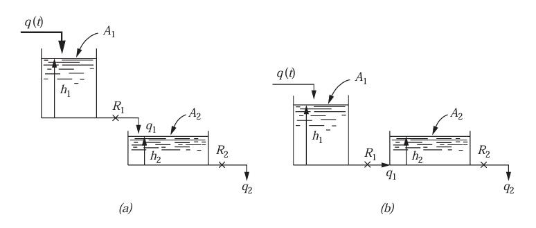
a의 경우 탱크가 2개 연결되어 있는데, 이 때 상호간의 간섭이 없다. 반면 b의 경우는 만약 h1=h2라면 정상상태가 되어 q1=0이 될 것이다. 이처럼 상호간의 간섭이 존재하게 된다. 먼저 상호작용이 없는 a를 살펴보도록 하자.
1)상호작용이 없는 계
저번 포스팅에서 본 바와 마찬가지인 액위 시스템이므로, 밀도는 일정하고 탱크의 단면적도 일정하며 흐름이 선형저항을 가진다고 가정할 것이다. 이때 h2와 공급 q를 관련시키는 전달함수를 구해보자.
먼저 첫 탱크에 물질수지를 세우면 다음과 같다.
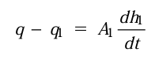
두 번째 탱크도 세우면 다음과 같다.
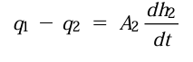
이때 선형저항이 있으므로 유량사이에 다음 관계가 성립한다.
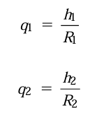
** 이제 첫번쨰 탱크의 전달함수를 구해보자.
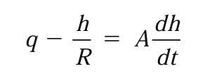
이제 전달함수를 구하기 위해 편차변수를 도입해보자. 정상상태일 때 값은 다음과 같다.
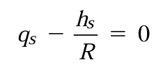
이 둘을 빼면 다음과 같이 정의된다.
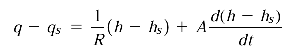 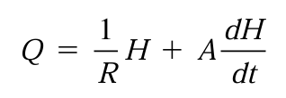
이제 라플라스 변환을 해보자.
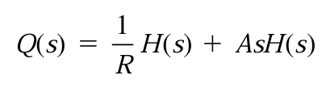
이후 전달함수를 구하면 다음과 같은 형태가 된다.
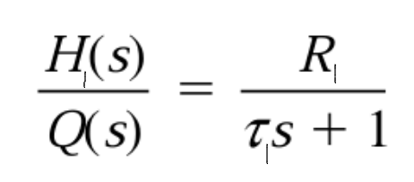
여기서 H(S)와 τ, R은 첫번째 탱크의 값이다. 이제 여기서 H1(S)를 나타내기 위해 다음과 같은 선형저항 관계를 이용한다.
여기서 H1(S)=Q1R1임을 알 수 있다. 이를 대입하면 다음 식을 얻게 된다.
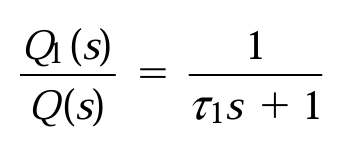 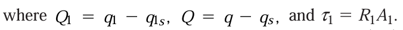
똑같은 방식으로, 탱크 2에 물질수지를 구하여 Q1(S)와 H2(S)사이의 전달함수를 구해보면 다음과 같다.
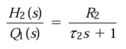
이 둘을 곱하면 공급과 그에 따른 최종 액위 사이의 전달함수가 나오게 된다.
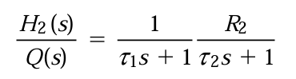
즉 이 총괄전달함수는 두 개의 1차 전달함수들의 곱으로 표현되며 이 때 각각의 전달함수는 서로 독립적으로 운전되는 단일 탱크의 전달함수이다. 즉 상호작용이 없는 경우에는 각각의 개별적인 탱크의 전달함수들을 구한 후 그들을 곱하여 총괄 전달함수를 구하는 접근을 시도할 수 있다.
이제 이것에 관한 예제를 풀어보도록 하자. 두 개의 탱크가 상호작용이 없도록 그림 a처럼 연결되어 있을 때, 시간 상수는 각각 τ1=0.5, τ2=1이고 R2=1이다. 첫 번째 탱크로의 입구 유속이 단위계단 변화를 보였을 때, 두 번째 탱크의 액위는 어떻게 되겠는가?
일단 상호작용이 없으므로, 각각의 단일 탱크로 문제를 간단화할 수 있다. 단일 탱크의 전달함수들은 다음처럼 나타낼 수 있음을 알고 있다.
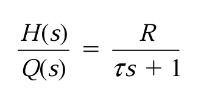 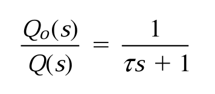
우리가 구하는 것은 첫 공급에 대한 두 번째 탱크의 액위이므로, 다음처럼 나타낼 수 있다.
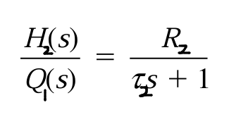
여기서 Q1을 소거해야한다.
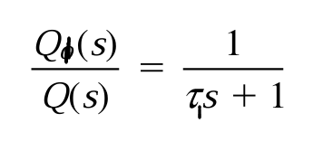
이 둘을 곱하게 되면 다음과 같다.
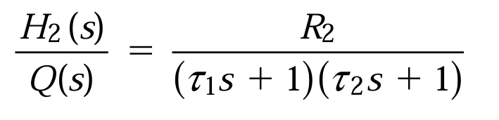
여기에 단위 계단 변화가 듫어왔으므로
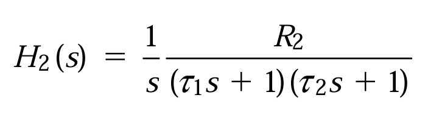
이를 라플라스 역변환하면 다음과 같다.
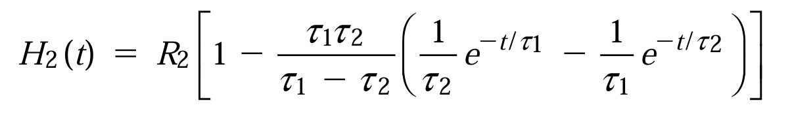
이제 값을 대입하면 다음 식이 나온다.
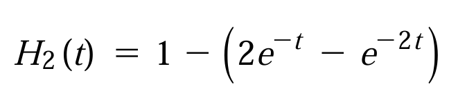
이 응답을 다음 그림에 나타내었다.
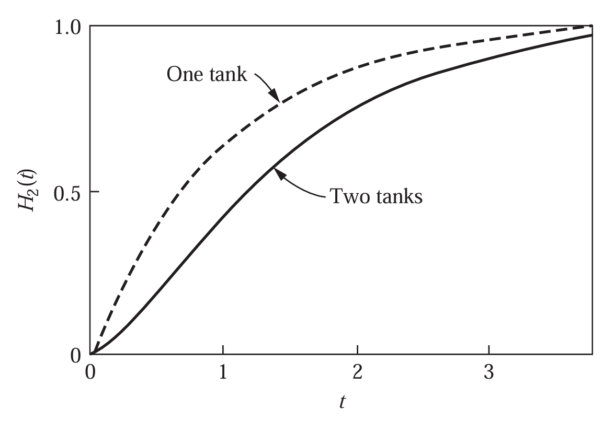
첫번째 탱크의 액위 곡선에 비해 액위가 약간 낮아진 것을 알 수 있다. 이는 상호작용이 없는 두 개의 1차계로 구성된 계의 계단 응답이 S자 형을 나타내고, 계단 응답이 들어온 직후에는 응답이 서서히 변화하는 것을 알 수 있다. 이러한 지연을 전달지연이라고 부르는데, 항상 두 개 또는 그 이상의 1차계가 직렬로 연결되었을 때 나타난다. 한 개의 1차계인 경우에는 전달지연이 없고, 들어오자마자 반응이 가장 빠르게 일어난다.
이제 1차계가 2개연결된 것을 보았으니 이를 일반화하여 여러 개의 직렬로 연결된 상호작용이 없는 계들을 살펴보자. 이때 총괄전달함수는 단순히 각 전달함수들을 곱하여 나타난다는 것을 알게 되었다. 이를 도표로 나타내면 다음과 같다.
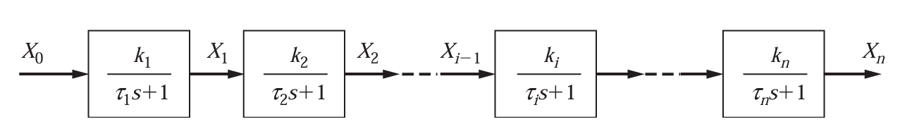
따라서 각각의 경우 입력과 출력의 전달함수는 다음과 같다.
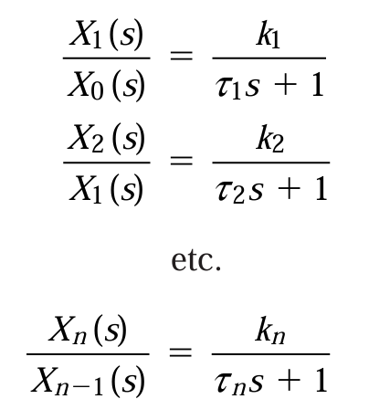
이들을 모두 곱하면 초기 유입과 최종유출간 전달함수를 얻을 수 있다.
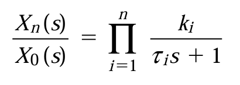
이때, 연결된 계들이 많아질 수록 전달지연이 발생하며 이는 계의 증가에 따른 출력함수의 그래프로 알아볼 수 있다.
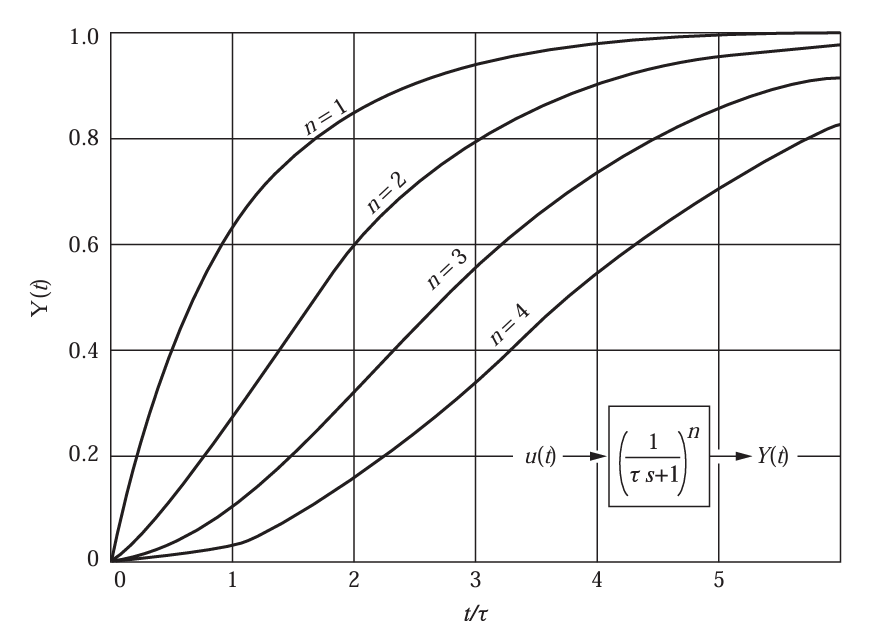
2) 상호작용이 있는 계
이제 상호작용이 있는 계를 살펴보려고 한다.
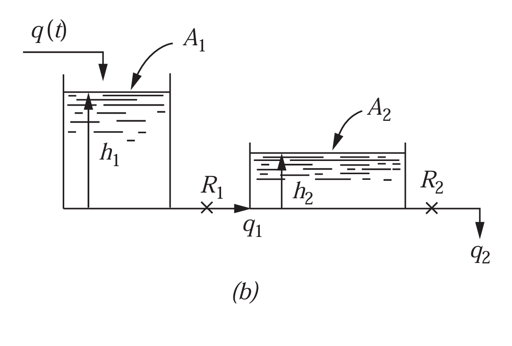
이것은 상호작용이 없는 계와 마찬가지로, 물질수지를 세우는 것에서부터 시작한다.
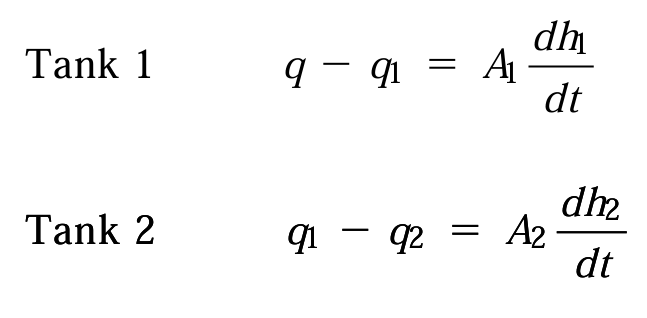
여기서 선형저항을 가정하면 유속과 액위사이 관계는 다음과 같다.
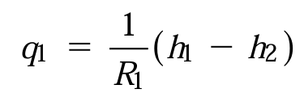
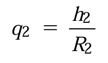
q1이 두번째 탱크의 액위에 영향을 받는 것에 주의하자. 이제 이들을 편차변수로 나타내고, 그 결과들을 변환한 다음 이들을 곱하거나 나누어 원하지 않는 변수를 소거하여 전달함수를 구하게 된다.
먼저 정상상태일 때는 다음과 같다.
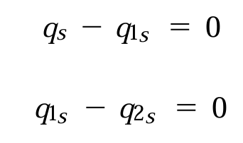
이를 각 식에서 빼주어 편차변수로 나타내면 *물질수지*와 **선형저항 관계**는 다음과 같다.
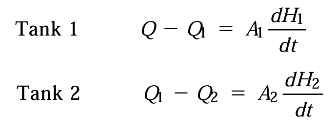 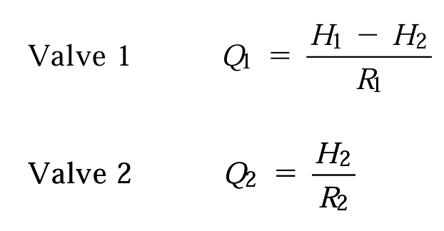
4개의 식을 얻게 되었는데, 미지수가 Q, Q1, Q2, H1, H2로 5개가 존재하므로, 적당히 결합하여 Q1 Q2 H1을 소거하면 원하는 전달함수를 구할 수 있을 것이다.
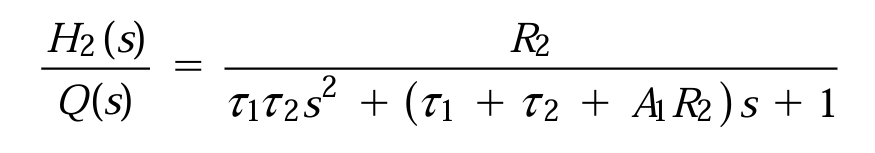
구하면 이런식으로 나오게 되는데, 상호작용이 없는 계와의 차이점을 비교해보자.

이것과의 차이는, s의 계수에 A1R2항이 추가로 들어가있다는 것이다. 나머지는 괄호를 풀면 다 같다.
계의 상호작용의 영향은 상호작용이 있는 계의 유효 시간상수를 변화시키는 것으로 나타남이 알려져있다. 상호작용이 있을 경우 없을 때의 각 탱크가 갖는 시간상수 τ에 비하여 하나는 엄청 커지고, 하나는 작아진다. 예를 들어 τ1= τ2인 계에 대하여 상호작용이 없는 경우에는 입구흐름과 출구흐름사이 전달함수가 다음과 같아진다.
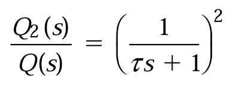
반면 상호작용이 있을 경우에는 다음과 같다.
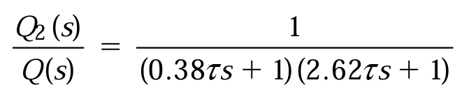
이를 그래프로 도시해보면 다음과 같다.
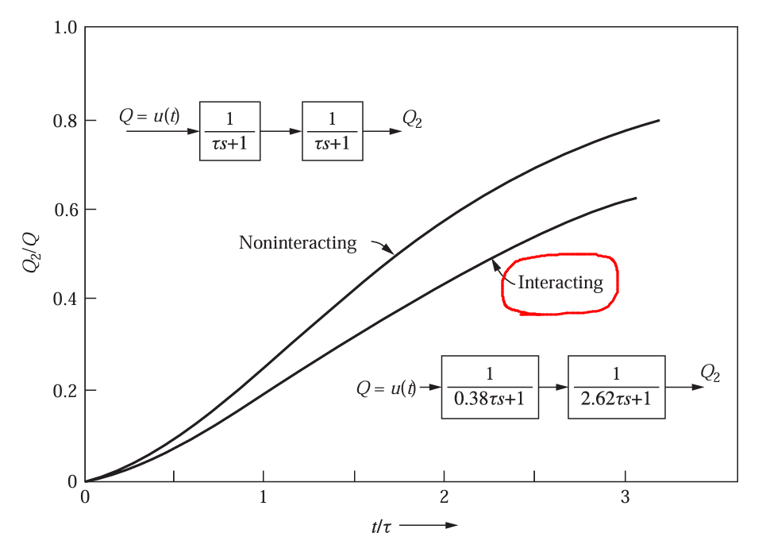
상호작용이 의미하는 바는 이로서 응답을 느리게 만드는, 즉 지연을 발생시키는 것이라는 걸 알 수 있다. 일반적으로 두 개의 1차 지연을 포함하는 계에 상호작용이 있는 경우 시간상수들 사이의 비가 변화하게 된다. 과도응답 측면에서 보면 , 이것은 상호작용이 있는 계의 응답이 상호작용이 없을 때보다 더 느려짐을 의미한다.
요약:
상호작용이 없는계- 직렬로 연결된 두 개의 계에서 두번째 계의 값이 첫번째 계의 출력에 영향을 주지 않는 경우 이를 상호작용이 없다고 판단한다.
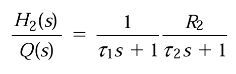
반대로 영향을 줄 경우 상호작용이 있는 계이다.
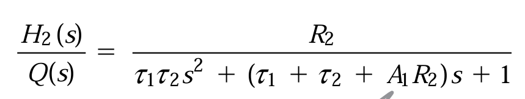
분모에 추가항이 나타남에 유의하여라. 이 항은 유효 시간상수의 비를 변화시키고 공정의 응답이 지연되는 효과를 가져온다.
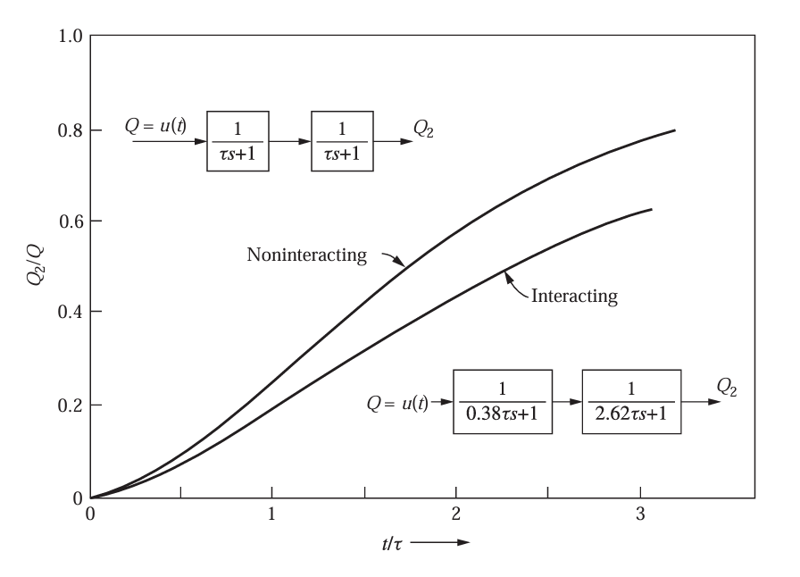